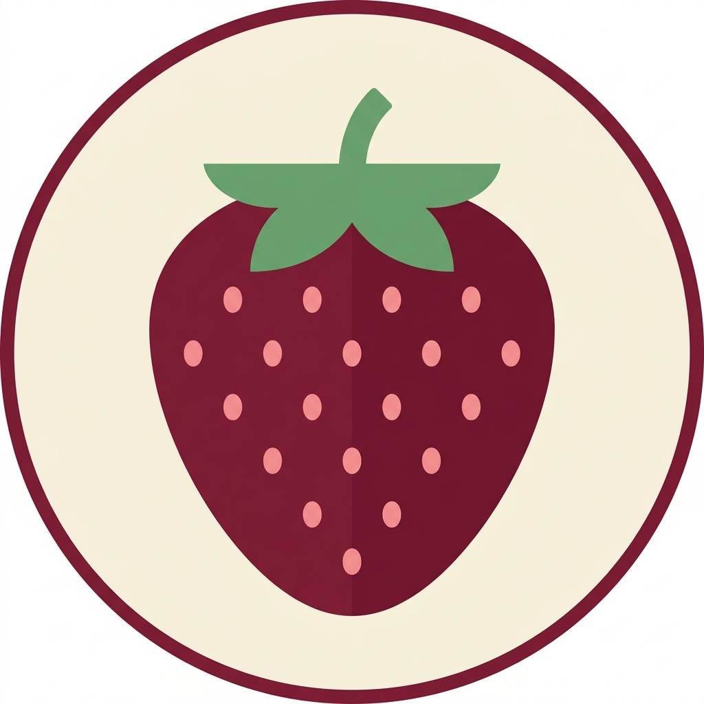

O morango não é uma fruta de verdade!
Por: Alanis
Botanicamente falando, o morango é um "falso fruto"! A parte vermelha e suculenta é o receptáculo da flor, enquanto os pequenos pontinhos na superfície são os verdadeiros frutos.
Fonte: Biologia Total